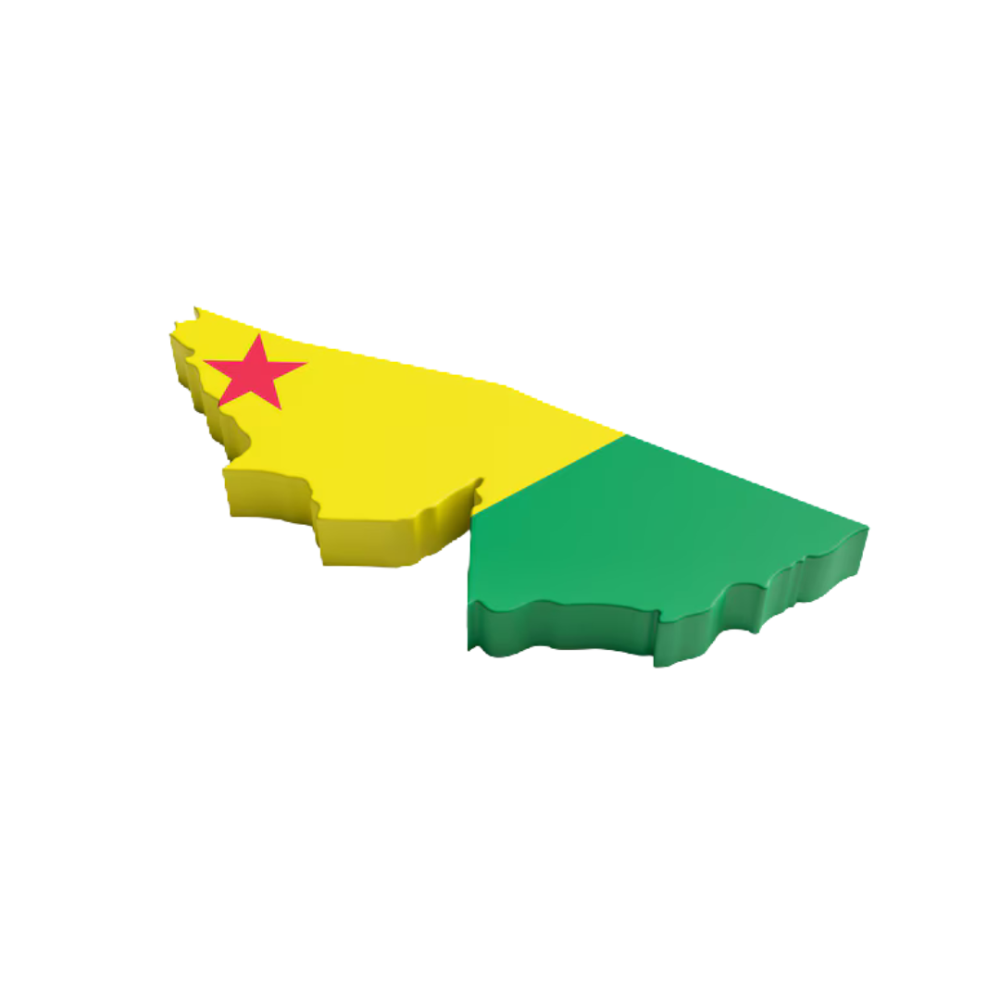

Valor de produção: R$ 244 milhões (safra 2023/24)
Quantidade produzida: 497 mil toneladas
Área cultivada: 21.565 hectares
Produtividade: 23.033 kg/ha
Rendimento financeiro: R$ 11.293,02/ha
Município de maior produção:
Cruzeiro do Sul
Segundo maior produto agrícola da região Norte, com produtividade 42% abaixo da média nacional e rendimento financeiro 12% abaixo.
Geralmente, os maiores compradores de mandioca e milho são indústrias alimentícias e distribuidoras locais para processamento e venda nos mercados regionais e externos. Empresas como Indústrias de Alimentos e Cooperativas Agropecuárias podem ser compradores típicos.
Indústrias de ração animal (soja e milho). Comerciantes locais e grandes distribuidores de grãos (Bunge Brasil, Cargill) para mercados nacionais e externos.
Empresas do setor de exportação de carne e abatedouros (JBS). Empresas locais de processamento de carne.
Indústrias de alimentos e cosméticos para castanha-do-brasil (Cacau Show, Diana Alimentos). Indústrias de produtos derivados da borracha (Goodyear, Michelin).